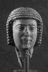

Pek çok tıp tarihinde Yunanlı doktor Hipokrat (MÖ 460-375) tıbbın babası olarak anılır. Ne var ki onun doğumundan 2000 yıl önce Mısırlı bir mimar ve rahip olan İmhotep, veremden diş ağrısı ve kireçlenmeye kadar pek çok hastalık için tedaviler geliştirmiştir.

Gerçekten de MÖ 2650 yıllarında Mısır’da yaşayan İmhotep tarihin ilk doktoru olarak kabul edilmektedir. Firavun Djoser’in üst düzey bir yetkilisi olan İmhotep yüzlerce hastalığı kayıt altına almıştı. Ölümünden binlerce yıl sonra bile tanrılar kadar saygı gören usta bir şifacıydı.
Aynı zamanda firavunun mimarı olarak ilk Mısır piramidini de o tasarlayıp inşa etmiştir. Yaklaşık 61 metre uzunluğundaki bu basamaklı yapı Djoser’in mezarıydı. O zamana kadar yapılmış en büyük yapılardan biri olan “Basamaklı Piramit” bugün Kahire’nin güneyinde yer almaktadır.
Halktan biri olarak dünyaya gelen İmhotep, Heliopolis’teki tapınakta yüksek rahip oldu. Burası Mısır’ın dini başkenti olarak kabul ediliyordu. İmhotep burada daha sonra firavunun veziri ve en güçlü danışmanı konumuna gelecekti.
İmhotep’in papirüslere yazıldığı düşünülen tıbbi tedavileri, tıbbi şifacılık tekniklerini hurafelerden ayırmaya dönük ilk girişim olarak kabul edilmektedir. Bunlar İmhotep’in ölümünden sonra çoğaltılarak nesilden nesile aktarılmıştır. İmhotep yüzlerce farklı hastalık için tedaviler geliştirmişti. Antik Mısırlılar yaraların balla tedavi edilebileceğine, kerevizin romatizmayı azaltacağına ve sarısabır ağacının cilde iyi geldiğine inanırlardı. İmhotep’in geliştirdiği tedavi yöntemlerinin bazıları modern araştırmacılar tarafından da onaylanmıştır. Akasyanın soğuk algınlığı belirtilerini azaltması İmhotep’in modern tıp tarafından onaylanan tedavi yöntemlerinden birisidir.
Ölümünden sonraki yüzyıllarda iyileştirici gücü dolayısıyla İmhotep’e tapılmaya başlanmış, MÖ 525 yılında Antik Mısır tapınağında resmen Tanrı kabul edilmiştir.
Ek Bilgiler
1- 1932 yapımı korku filmi The Mummy’e (Mumya) ilham kaynağı olan İmhotep, film sayesinde ününe ün katmıştır. Kaybettiği aşkı için yeniden hayata dönen İm-ho-tep karakterini Boris Karloff’un (1887-1969) canlandırdığı film, 1999 yılında yeniden çevrilmiştir. Filmin yeni versiyonunda İmhotep Arnold Vosloo (1962- ) tarafından canlandırılmıştır.
2- İmhotep ismi Antik Mısır dilinde “Barışla Gelen” anlamına gelmektedir.
3- İmhotep’in tasarladığı “Basamaklı Piramit” Giza’daki meşhur Büyük Piramit’e model teşkil etmiştir. Firavun Khufu’nun (MÖ 2609-2556) mezarı olarak yüz yıl sonra inşa edilen Büyük Piramit yaklaşık 4000 yıl boyunca insanlar tarafından inşa edilen en uzun yapı unvanını korumayı başarmıştır. Ancak Orta Çağ’da inşa edilen Avrupa katedralleri Büyük Piramit’i aşmayı başarabilmişlerdir.